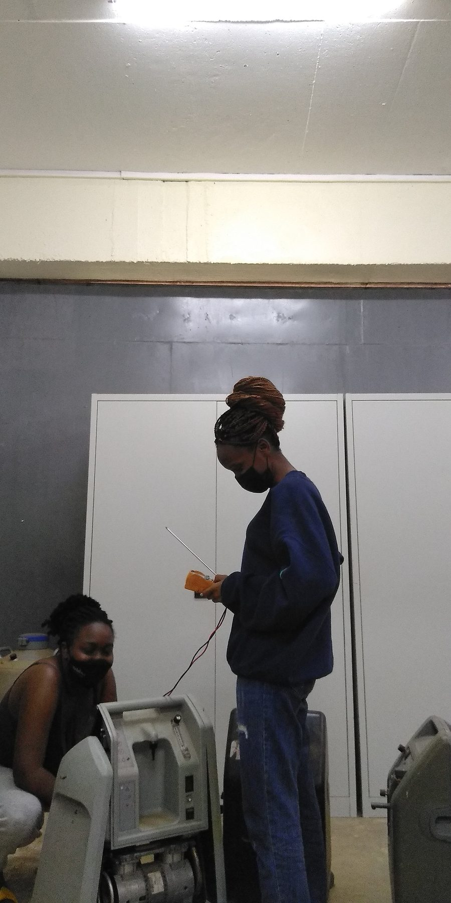

When the power goes out, we keep the oxygen flowing
PearlOxy's MPOS system is designed to reduce interruptions to oxygen therapy caused by power outages in low-resource hospitals.
Oxygen has no substitute
For a patient in respiratory distress, oxygen is not one option among several. There is nothing else to give.
That is what makes a power cut in a facility running oxygen concentrators different from a power cut anywhere else. Lighting can wait. Records can wait. Oxygen therapy cannot.
MPOS is designed for exactly that window: the time between the power going out and the power coming back, when a patient on continuous oxygen therapy has no reserve of their own.
PearlOxy on YouTube. Playing loads content from YouTube.
What PearlOxy projects per MPOS unit
Two of the four figures below are design specifications. Two are company projections from the pitch deck. Each card says which it is.
Patients supplied simultaneously, up to
Product specificationBackup operation per power interruption, up to
Product specificationLitres/minute of oxygen stored and delivered annually, per unit
Pitch deck projectionChildren's lives the deck describes one unit as supporting annually
Pitch deck projectionDistinguishing projections from verified evidence
The PearlOxy pitch deck states that one MPOS unit can store and deliver 2,419,200 litres per minute of oxygen annually, described in the deck as enough to save 224 children. Both figures are reproduced here exactly as the company stated them.
They are company-provided impact projections. They are not independently verified medical evidence, they have not been peer reviewed, and they have not been validated in clinical trials. Clinical trials to validate MPOS performance in real-world patient settings are planned for 2026. PearlOxy will update these figures as validated results become available.
Three groups feel the difference
Patients
People on continuous oxygen therapy, who have the least tolerance for an interruption in supply.
Healthcare workers
Clinical teams who currently have to improvise a backup at the moment the power goes out.
Facilities
Hospitals and health centres that gain oxygen security without taking on a recurring refill cost.
Building it, testing it, showing it




When the power goes out, we keep the oxygen flowing.PearlOxy Uganda Limited
Help put MPOS where it is needed
Facilities, funders and distributors all have a role in closing the oxygen gap.